Va chạm hạt 3D
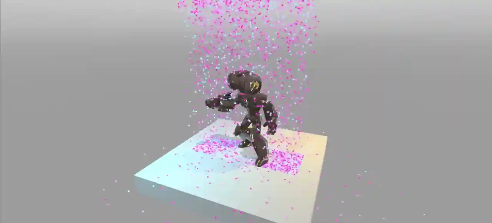
Vì hạt GPU được xử lý hoàn toàn trên GPU, chúng không có quyền truy cập vào thế giới vật lý của game. Nếu bạn cần hạt va chạm với môi trường, bạn phải thiết lập các node va chạm hạt. Có bốn loại: class_GPUParticlesCollisionBox3D, class_GPUParticlesCollisionSphere3D, class_GPUParticlesCollisionSDF3D và class_GPUParticlesCollisionHeightField3D.
Thuộc tính chung
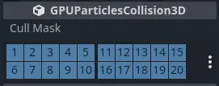
Các thuộc tính chung của va chạm
Có một số thuộc tính mà bạn có thể tìm thấy trên mọi node va chạm. Chúng nằm trong mục GPUParticlesCollision3D trong Inspector.
Thuộc tính Cull Mask điều khiển những hệ thống hạt nào chịu ảnh hưởng của một node va chạm, dựa trên các lớp hiển thị của từng hệ thống. Một hệ thống hạt chỉ va chạm với một node va chạm nếu ít nhất một trong các lớp hiển thị của hệ thống được bật trong cull mask của collider.
Va chạm hình hộp
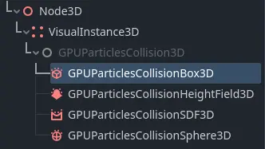
Box collision trong danh sách node
Node box collision có hình dạng một khối hộp chữ nhật đặc. Bạn điều khiển kích thước của chúng bằng thuộc tính Extents. Extents của hộp luôn đo một nửa các cạnh của giới hạn, vì vậy giá trị (X=1.0,Y=1.0,Z=1.0) tạo ra một hộp rộng 2 mét ở mỗi cạnh. Node box collision hữu ích để mô phỏng hình học sàn và tường mà hạt cần va chạm vào.
Để tạo một node box collision, hãy thêm một node con mới vào scene và chọn GPUParticlesCollisionBox3D từ danh sách các node có sẵn. Bạn có thể tạo hoạt ảnh cho vị trí của hộp hoặc gắn nó vào một node đang di chuyển để có hiệu ứng sinh động hơn.
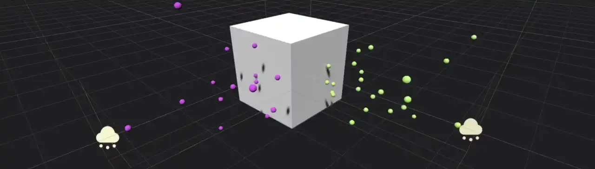
Hai hệ thống hạt va chạm với một node box collision
Va chạm hình cầu
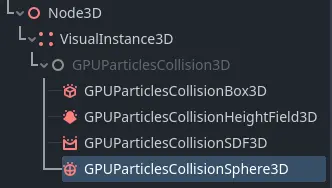
Sphere collision trong danh sách node
Node sphere collision có hình dạng một khối cầu đặc. Thuộc tính Radius điều khiển kích thước của khối cầu. Trong khi node box collision không nhất thiết phải là khối lập phương hoàn hảo, node sphere collision luôn là hình cầu. Nếu bạn muốn đặt chiều rộng độc lập với chiều cao, bạn phải thay đổi thuộc tính Scale trong mục Node3D.
Để tạo một node sphere collision, hãy thêm một node con mới vào scene và chọn GPUParticlesCollisionSphere3D từ danh sách các node có sẵn. Bạn có thể tạo hoạt ảnh cho vị trí của khối cầu hoặc gắn nó vào một node đang di chuyển để có hiệu ứng sinh động hơn.
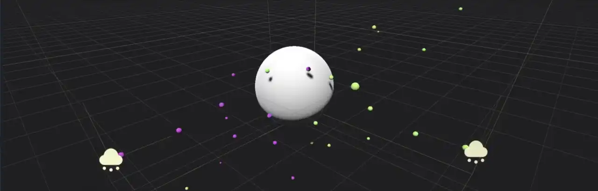
Hai hệ thống hạt va chạm với một node sphere collision
Va chạm height field
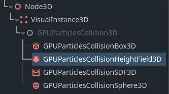
Height field collision trong danh sách node
Va chạm hạt bằng height field rất hữu ích cho các khu vực ngoài trời rộng lớn cần va chạm với hạt. Khi chạy, node tạo ra một height field từ tất cả các mesh nằm trong giới hạn của nó và khớp với cull mask của nó. Hạt va chạm với mesh mà height field này biểu diễn. Vì việc tạo height field được thực hiện động, nó có thể đi theo camera của người chơi và phản ứng với các thay đổi trong màn chơi. Các cài đặt khác nhau cho mật độ height field mang lại nhiều lựa chọn điều chỉnh hiệu năng.
Để tạo một node height field collision, hãy thêm một node con mới vào scene và chọn GPUParticlesCollisionHeightField3D từ danh sách các node có sẵn.
Node height field collision có hình dạng một hộp. Thuộc tính Extents điều khiển kích thước của nó. Extents luôn đo một nửa các cạnh của giới hạn, vì vậy giá trị (X=1.0,Y=1.0,Z=1.0) tạo ra một hộp rộng 2 mét ở mỗi cạnh. Mọi thứ nằm ngoài extents của node sẽ bị bỏ qua khi tạo height field.
Thuộc tính Resolution điều khiển mức độ chi tiết của height field. Độ phân giải thấp hơn chạy nhanh hơn nhưng kém chính xác hơn. Nếu độ phân giải height field quá thấp, có thể trông như hạt xuyên qua hình học của màn chơi hoặc bị kẹt lơ lửng trên không khi va chạm. Chúng cũng có thể bỏ qua hoàn toàn một số mesh nhỏ.
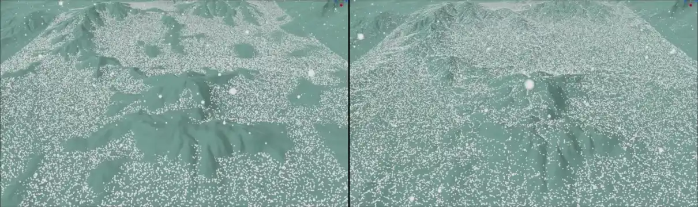
Ở độ phân giải thấp, height field collision bỏ sót một số chi tiết nhỏ (trái)
Thuộc tính Update Mode điều khiển thời điểm height field được tạo lại từ các mesh trong giới hạn của nó. Đặt thành When Moved để chỉ làm mới khi nó di chuyển. Cách này có hiệu năng tốt và phù hợp với các scene tĩnh, ít thay đổi. Nếu bạn cần hạt va chạm với các đối tượng động thường xuyên thay đổi vị trí, bạn có thể chọn Always để làm mới mỗi frame. Điều này tốn hiệu năng và chỉ nên dùng khi cần thiết.
Ghi chú
Điều quan trọng cần nhớ là khi Update Mode được đặt thành When Moved, chính chuyển động của node height field mới kích hoạt việc cập nhật. Height field không được cập nhật khi một trong các mesh bên trong nó di chuyển.
Khi được bật, thuộc tính Follow Camera Enabled khiến height field đi theo camera hiện tại. Nó sẽ cập nhật mỗi khi camera di chuyển. Thuộc tính này có thể dùng để đảm bảo luôn có va chạm hạt quanh người chơi mà không lãng phí hiệu năng cho các vùng nằm ngoài tầm nhìn hoặc ở quá xa.
Va chạm SDF
Ghi chú
Va chạm hạt SDF chỉ được hỗ trợ trong renderer Forward+ và Mobile, không hỗ trợ trong Compatibility.
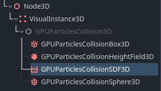
SDF collision trong danh sách node
Node SDF collision tạo ra một trường khoảng cách có dấu (signed distance field) mà hạt có thể va chạm vào. SDF collision tương tự height field collision ở chỗ nó biến nhiều mesh trong giới hạn của nó thành một thể tích va chạm duy nhất cho hạt. Một khác biệt lớn là signed distance field có thể biểu diễn lỗ hổng, đường hầm và phần nhô ra, điều mà chỉ riêng height field không thể làm được. Chi phí hiệu năng lớn hơn so với height field, vì vậy chúng phù hợp nhất với các môi trường có kích thước nhỏ đến trung bình.
Để tạo một node SDF collision, hãy thêm một node con mới vào scene và chọn GPUParticlesCollisionSDF3D từ danh sách các node có sẵn. Node SDF collision phải được bake thì mới có tác dụng lên hạt trong màn chơi. Để làm vậy, hãy nhấn nút trên thanh công cụ của viewport khi đang chọn node SDF collision và chọn một thư mục để lưu dữ liệu đã bake. Vì SDF collision cần được bake trong trình chỉnh sửa, nó là tĩnh và không thể thay đổi khi chạy.
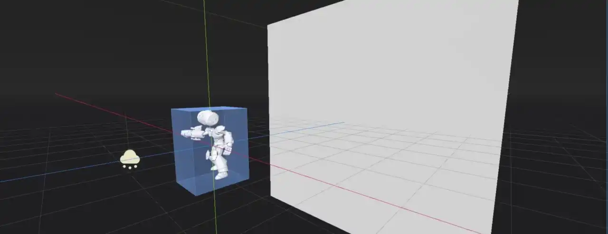
Va chạm hạt SDF cho phép tạo các hình dạng va chạm 3 chiều rất chi tiết
Node SDF collision có hình dạng một hộp. Thuộc tính Extents điều khiển kích thước của nó. Extents luôn đo một nửa các cạnh của giới hạn, vì vậy giá trị (X=1.0,Y=1.0,Z=1.0) tạo ra một hộp rộng 2 mét ở mỗi cạnh. Mọi thứ nằm ngoài extents của node sẽ bị bỏ qua khi tính va chạm.
Thuộc tính Resolution điều khiển mức độ chi tiết của trường khoảng cách. Độ phân giải thấp hơn chạy nhanh hơn nhưng kém chính xác hơn. Nếu độ phân giải quá thấp, có thể trông như hạt xuyên qua hình học của màn chơi hoặc bị kẹt lơ lửng trên không khi va chạm. Chúng cũng có thể bỏ qua hoàn toàn một số mesh nhỏ.
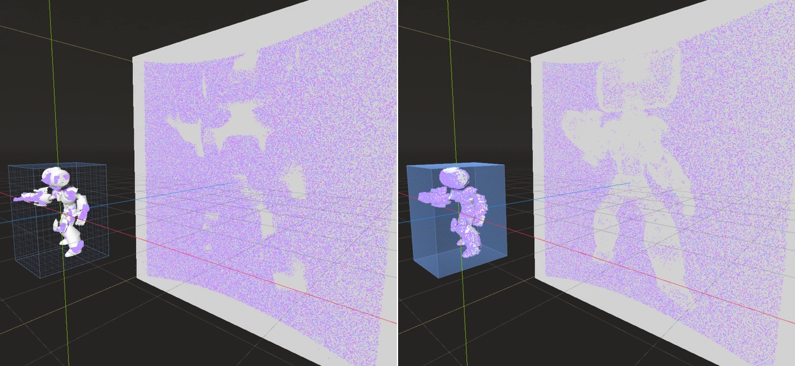
Cùng một khu vực được bao phủ bởi signed distance field ở các độ phân giải khác nhau: 16 (trái) và 256 (phải)
Thuộc tính Thickness cho trường khoảng cách, vốn thường rỗng bên trong, một độ dày để ngăn hạt xuyên qua khi di chuyển ở tốc độ cao. Nếu bạn thấy một số hạt không va chạm với hình học của màn chơi mà bay xuyên thẳng qua, hãy thử đặt thuộc tính này thành giá trị cao hơn.
Thuộc tính Bake Mask điều khiển những mesh nào được xét đến khi bake SDF. Chỉ những mesh được kết xuất trên các lớp đang bật trong bake mask mới góp phần vào va chạm hạt.
Khắc phục sự cố
Để va chạm hạt hoạt động, visibility AABB của hạt phải chồng lên AABB của collider. Nếu va chạm có vẻ không hoạt động dù đã thiết lập collider, hãy tạo visibility AABB mới bằng cách chọn node GPUParticles3D và chọn GPUParticles3D > Generate Visibility AABB… ở phía trên viewport của trình chỉnh sửa 3D.
Nếu hạt di chuyển nhanh và collider mỏng. Có hai giải pháp cho trường hợp này:
Làm collider dày hơn. Ví dụ, nếu hạt không được phép đi xuống dưới một mặt sàn đặc, bạn có thể làm collider biểu diễn sàn dày hơn so với hình ảnh hiển thị thực tế của nó. Collider heightfield tự động xử lý điều này theo thiết kế, vì heightfield không thể biểu diễn va chạm kiểu "phòng chồng lên phòng".
Tăng
Fixed FPStrong node GPUParticles3D, để kiểm tra va chạm thường xuyên hơn. Điều này tốn hiệu năng, vì vậy hãy tránh đặt giá trị quá cao.